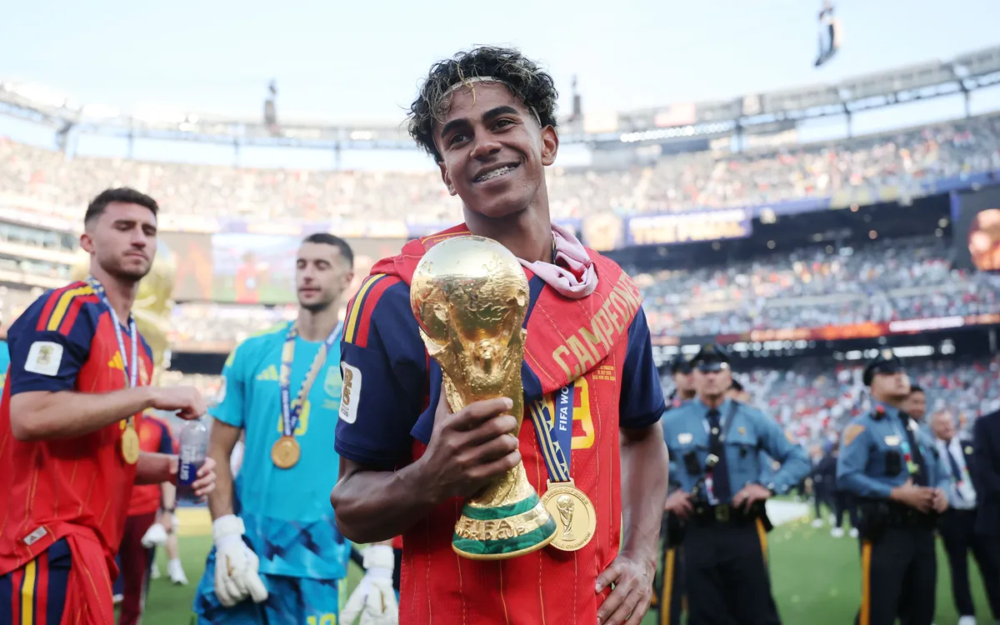

หากย้อนกลับไปในวันที่ ลามีน ยามาล (Lamine Yamal) ก้าวลงสู่สนามคัมป์ นู ในฐานะนักเตะอายุน้อยที่สุดในประวัติศาสตร์สโมสรบาร์เซโลนา ภาพที่เราเห็นคือเด็กชายร่างบาง หน้าตาขี้อาย ผู้เล่นฟุตบอลด้วยสัญชาตญาณบริสุทธิ์ แต่ตัดภาพกลับมาในปัจจุบัน เขาเปลี่ยนไปจนแทบกลายเป็นคนละคน
การเปลี่ยนแปลงของยามาล ไม่ใช่แค่เรื่องของตัวเลขสถิติหรืออายุที่เพิ่มขึ้น แต่เป็นการปฏิวัติตัวเองทั้งในมิติของ **สภาพร่างกาย (Physicality)**, **ทัศนคติในสนาม (Mentality)** และ **บทบาทความรับผิดชอบ (Role & Responsibility)** ที่ก้าวกระโดดเกินวัยไปไกลมาก
หนึ่งในปัญหาใหญ่ของดาวรุ่งที่ขึ้นสู่ทีมชุดใหญ่ตั้งแต่อายุ 15-16 ปี คือการรับมือกับปะทะของฟุตบอลอาชีพ ในช่วงแรก ยามาลถูกกองหลังฝั่งตรงข้ามเบียดแย่งบอลได้ง่ายด้วยรูปร่างที่ยังพัฒนาไม่เต็มที่
แต่ตลอดช่วงเวลาที่ผ่านมา ทีมโภชนาการและฟิตเนสของบาร์เซโลนาได้วางโปรแกรมสร้างมวลกล้ามเนื้อ (Lean Muscle Mass) แบบเข้มงวดให้เขาโดยเฉพาะ ผลลัพธ์คือยามาลในปัจจุบันมีช่วงบนที่หนาขึ้น ชนแล้วไม่ล้มง่ายๆ แถมยังบังบอลในพื้นที่แคบได้แข็งแกร่ง นำมาซึ่งความเร็วในการออกตัวที่ระเบิดพลังได้ดีกว่าเดิมอย่างเห็นได้ชัด
ในยุคแรก สไตล์การเล่นของยามาลถูกคาดเดาได้ง่าย นั่นคือการยืนชิดเส้นทางขวา ดึงจังหวะ แล้วเลี้ยงตัดเข้าข้างในเพื่อหาช่องยิงด้วยเท้าซ้าย แต่สิ่งที่เปลี่ยนไปอย่างสิ้นเชิงคือ **วิสัยทัศน์การจ่ายบอล (Vision)**
ยามาลยกระดับตัวเองกลายเป็น Playmaker ในตำแหน่งปีก การจ่ายบอลกวาดเปลี่ยนแกน (Switching play), การแทงบอล Trivela (ใช้หลังเท้า) ทะลุช่อง และการประสานงานกับแบ็กขวา ทำได้อย่างแม่นยำและเยือกเย็นเกินเด็ก ทำให้คู่แข่งไม่สามารถรุมประกบเขาเพียงแค่การปิดเท้าซ้ายได้อีกต่อไป
การเปลี่ยนแปลงที่ยิ่งใหญ่ที่สุด อาจไม่ใช่เรื่องของเท้า แต่เป็นเรื่องของ **หัวใจ** ยามาลเรียนรู้ที่จะแบกรับความกดดันของสโมสรระดับโลก เขาเปลี่ยนจากเด็กวัยรุ่นที่ลงมาเล่นสนุกๆ กลายเป็นผู้นำเกมรุกที่เพื่อนร่วมทีมต่างคอยมองหาในยามที่ทีมต้องการประตู
จากเด็กกะละมังในวันนั้น สู่เบอร์ 10 และเสาหลักของบาร์เซโลนาในวันนี้ — นี่คือบทพิสูจน์ของการพัฒนาอย่างไม่หยุดยั้งของ Lamine Yamal!